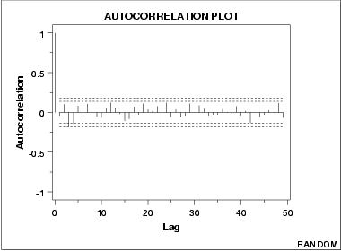

|
1.
Exploratory Data Analysis
1.3. EDA Techniques 1.3.3. Graphical Techniques: Alphabetic 1.3.3.1. Autocorrelation Plot
|
|||
| Autocorrelation Plot |
The following is a sample autocorrelation plot.
 |
||
| Conclusions |
We can make the following conclusions from this plot.
|
||
| Discussion |
Note that with the exception of lag 0, which is always 1 by
definition, almost all of the autocorrelations fall within the 95%
confidence limits. In addition, there is no apparent pattern
(such as the first twenty-five being positive and the second
twenty-five being negative). This is the abscence of a pattern we
expect to see if the data are in fact random.
A few lags slightly outside the 95% and 99% confidence limits do not neccessarily indicate non-randomness. For a 95% confidence interval, we might expect about one out of twenty lags to be statistically significant due to random fluctuations. There is no associative ability to infer from a current value Yi as to what the next value Yi+1 will be. Such non-association is the essense of randomness. In short, adjacent observations do not "co-relate", so we call this the "no autocorrelation" case. |
||